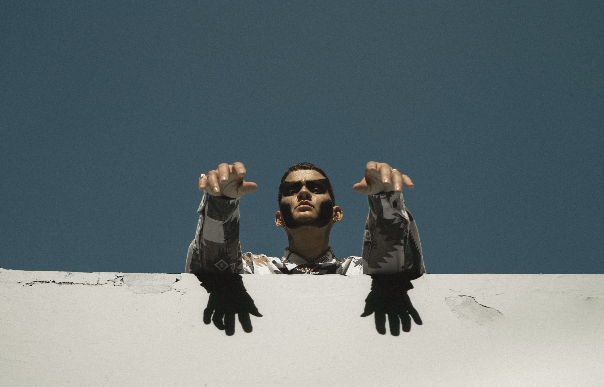

"As part of the broader mission of my independent concentration, this project sets out to practice philosophy through an expanded conception of theoretical language, that goes beyond the analytical epistemic methods using reason and logic to argue for a privileged truth. For example, I believe that a field like Biology is not necessarily constrained to the logic of the scientific method, but rather it is open to the plurality of forms through which language (logos) allows us to question our experience of life (bios). There is no clear quantitative constrain on the linguistic “forms” we can use to generate theory and practice philosophy. We can always create new symbols and ways of communicating using these symbols if warranted. Hence the idea of “creative forms” as the cornerstone of innovation in philosophical inquiry necessary in the 21st century. The plurality of linguistic forms that can be used to construct theory, necessarily implies a politics of symbolic systems and creative expression. There is a constant negotiation between grammar and experimentation, a struggle for harmonic coexistence in language so that legibility does not always dominate meaning."
"On the first part of my thesis, I am focusing on Francisco Matos Paoli and his poem Canto de la locura. I use a combination of archival research on his personal psychiatric history and close readings of his poetry and diary. The second part of my thesis focuses on Rita Indiana and her novel La mucama de Omicunlé. I am making comparisons between her portrayal of madness in the novel and Matos Paoli’s in his poem, especially in the different uses of language. I will also be writing on her song/video El Flaco de La Mancha (En contra del abismo), where she directly engages with Matos Paoli by writing a song inspired by Canto de la locura and samples his voice reciting the poem. In the third and final part I dive into the conceptual 7 differences between creative and prescriptive forms of language. I explore how Matos Paoli’s psychiatric records define and shape madness through discursive and pharmacological prescriptions. Throughout the work I will be using theorists such as Sylvia Wynter and Hannah Arendt to guide me through the terminology and concepts needed to build a philosophical framework where madness becomes a crucial player for transformative politics in the Caribbean. My goal is to show how Matos Paoli and Rita Indiana complement each other’s narratives concerning madness and ultimately offer insight on the creative forms and psychological/ biological risks of political action needed for colonial emancipation.
Link to full thesis